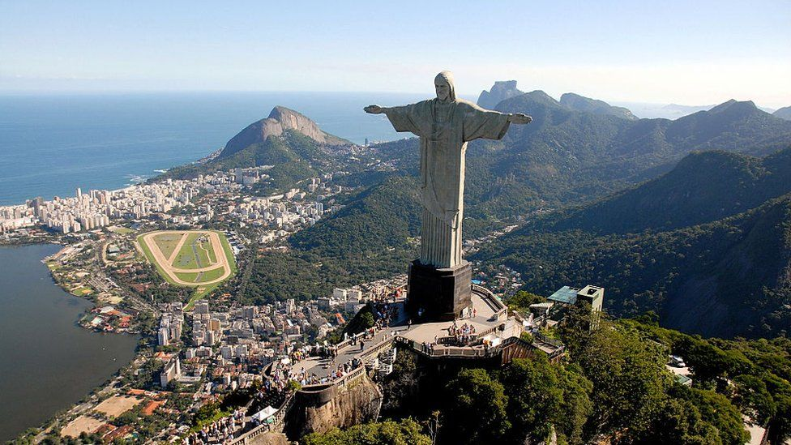

BRAZIL
Large country famous for Rio de Janeiro's Carnaval, samba dancing & the Amazon's rainforest & river.
Large country famous for Rio de Janeiro's Carnaval, samba dancing & the Amazon's rainforest & river.
OFFICIAL NAME: Federal Republic of Brazil
FORM OF GOVERNMENT: Democratic federal republic
CAPITAL: Brasilia
POPULATION: 208,846,892
OFFICIAL LANGUAGE: Portuguese
MONEY: Real
AREA: 3,286,470 square miles (8,511,965 square kilometers)
Christ the Redeemer is an Art Deco statue of Jesus Christ in Rio de Janeiro, Brazil, created by French sculptor Paul Landowski and built by Brazilian engineer Heitor da Silva Costa, in collaboration with French engineer Albert Caquot. Romanian sculptor Gheorghe Leonida fashioned the face. Constructed between 1922 and 1931, the statue is 30 metres high, excluding its 8-metre pedestal. The arms stretch 28 metres wide. It is made of reinforced concrete and soapstone. The Christ the Redeemer differs considerably from its original design. The initial plan was a large Christ with a globe in one hand and a cross in the other. Although the project organisers originally accepted the design, it later changed to the statue of today, with the arms spread out wide. The statue weighs 635 metric tons, and is located at the peak of the 700-metre Corcovado mountain in the Tijuca National Park overlooking the city of Rio de Janeiro. A symbol of Christianity around the world, the statue has also become a cultural icon of both Rio de Janeiro and Brazil and was voted one of the New Seven Wonders of the World.
Escadaria Selarón, also known as the 'Selaron Steps', is a set of world-famous steps in Rio de Janeiro, Brazil. They are the work of Chilean-born artist Jorge Selarón who claimed it as "my tribute to the Brazilian people".
Parque Enrique Lage is a public park in the city of Rio de Janeiro, located in the Jardim Botânico neighborhood at the foot of the Corcovado, on top of which Christ the Redeemer is located. The land was formerly the residence of industrialist Henrique Lage and his wife, singer Gabriella Besanzoni. During the 1920s, Lage had the mansion remodeled by Italian architect Mario Vodret, with interior paintings by Salvador Payols Sabaté. The National Historical and Artistic Heritage Institute listed Parque Lage, on June 14 1957, as a historical and cultural heritage site for the city of Rio de Janeiro. In the 1960s, the land became a public park, with walking trails through subtropical forest. The Escola de Artes Visuais do Parque Lage and a café open to the public operate from the former mansion. The mansion was used as the British Olympic Team hospitality house and is notably featured in the 2003 music video for Snoop Dogg's single "Beautiful"